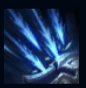

Ashe
| Ashe The Frost Archer | |
|---|---|
| Release date | 21.02.2009 |
| Class | Marksman |
| Positions | Bottom |
| Resource | Mana |
| Range type | Ranged |
| Adaptive type | Physical |
| Base statistics | |||
| Health | 570 – 2049 | Mana | 280 – 824 |
| Health regen. | 3.5 – 12.85 |
Mana regen. | 6.972 – 13.77 |
| Armor | 26 – 83.8 | Attack damage | 59 – 109.32 |
| Magic resist. | 30 – 38.5 | Crit. damage | 100% |
| Move. speed | 325 | Attack range | 600 |
Ashe este un vlăstar al gheții și războinica-mamă a tribului Avarosei, iar sub stindardul ei se află cea mai mare oaste a nordului. E inteligentă, idealistă și puternică, însă nu se simte în largul ei în rolul de conducătoare. Folosește magia străveche a tribului ei pentru a mânui un arc din gheață pură, iar poporul ei crede că este reîncarnarea eroinei mitice Avarosa. Ashe speră să unifice Freljordul cucerind ținuturile străvechi ale tribului ei. | LOVITURA ÎNGHEȚULUI Atacurile lui Ashe încetinesc ținta, iar Ashe le provoacă daune crescute acestor ținte. Atacurile critice ale lui Ashe nu provoacă daune bonus, dar îi aplică țintei o încetinire mai mare. |
|||
|---|---|---|---|---|
 |
CONCENTRARE DE NECLINTIT Când atacă, Ashe adună cumuluri de ''concentrare''. La nivelul maxim de ''concentrare'', poate activa abilitatea, consumând toate cumulurile pentru a primi un bonus temporar la viteza de atac și a-și transforma atacurile de bază într-o salvă de săgeți. |
|||
ROI DE SĂGEȚI Ashe lansează săgeți într-o zonă în formă de con, provocând daune crescute. Acestea aplică și ''Lovitura înghețului''. |
||||
| ZBORUL ȘOIMULUI Ashe își poate trimite Spiritul-Șoim ca iscoadă oriunde pe hartă.. |
||||
SĂGEATA FERMECATĂ DE CRISTAL Ashe lansează o săgeată de gheață în linie dreaptă. Dacă săgeata lovește un campion inamic, îi provoacă daune și îl amețește pe o durată ce crește proporțional cu distanța parcursă de săgeată. În plus, unitățile inamice din apropiere suferă daune și sunt încetinite. |